Servicing The Electrical System
Servicing The Electrical System
1. Prior to servicing the electrical system, be sure to turn off the ignition switch and disconnect the battery ground cable.
NOTE:
In the course of MFI or ELC system diagnosis, when the battery cable is removed, any diagnostic trouble code retained by the computer will be cleared. There fore, if necessary, record the diagnostic data before removing the battery cable.
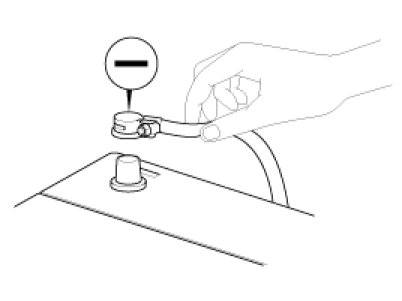
2. Attach the wiring harnesses with clamps so that there is no slack. However, for any harness which passes the engine or other vibrating parts of the vehicle, allow some slack within a range that does not allow the engine vibrations to cause the harness to come into contact with any of the surrounding parts and then secure the harness by using a clamp.
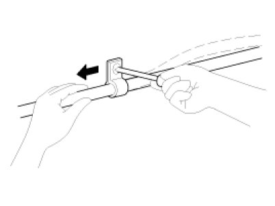
3. If any section of a wiring harness interferes with the edge of a parts, or a corner, wrap the section of the harness with tape or something similar in order to protect if from damage.
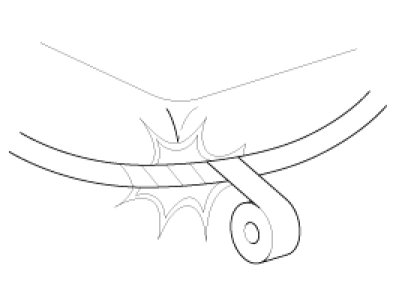
4. When installing any parts, be careful not to pinch or damage any of the wiring harness.
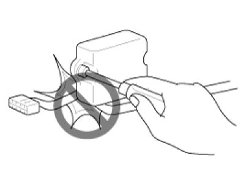
5. Never throw relays, sensors or electrical parts, or expose them to strong shock.
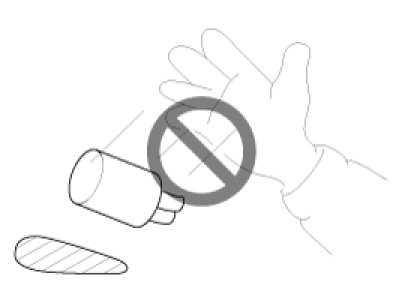
6. The electronic parts used in the computer, relays, etc. are readily damaged by heat. If there is a need for service operations that may cause the temperature to exceed 80°C (176°F), remove the electronic parts before hand.
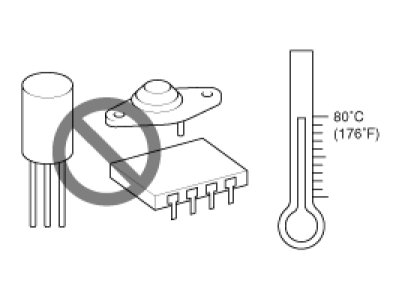
7. Loose connectors cause problems. Make sure that the connectors are always securely fastened.
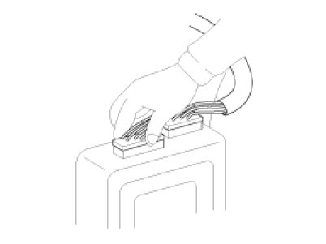
8. When disconnecting a connector, be sure to grip only the connector, not the wires.
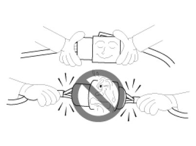
9. Disconnect connector which have catches by pressing in the direction of the arrows shown the illustration.
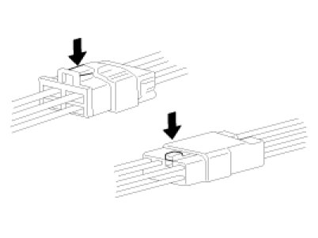
10. Connect connectors which have catches by inserting the connectors until they make a clicking sound.
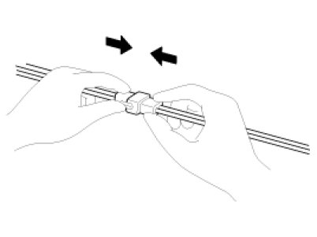
11. When using a circuit tester to check continuity or voltage on connector terminals, insert the test probe into the harness side. If the connector is a sealed connector, insert the test probe through the hole in the rubber cap until contacts the terminal, being careful not to damage the insulation of the wires.
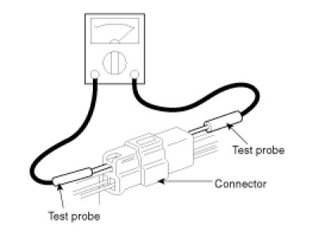
12. To avoid overloading the wiring, take the electrical current load of the optional equipment into consideration, and determine the appropriate wire size.
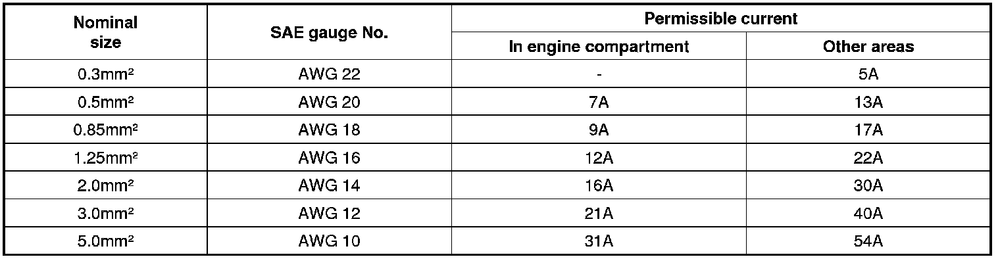